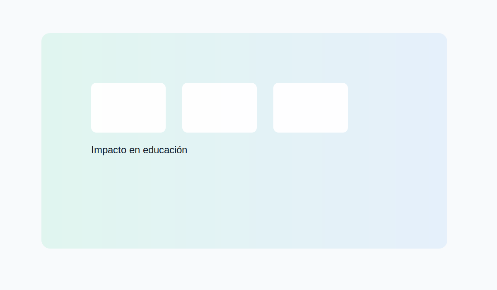
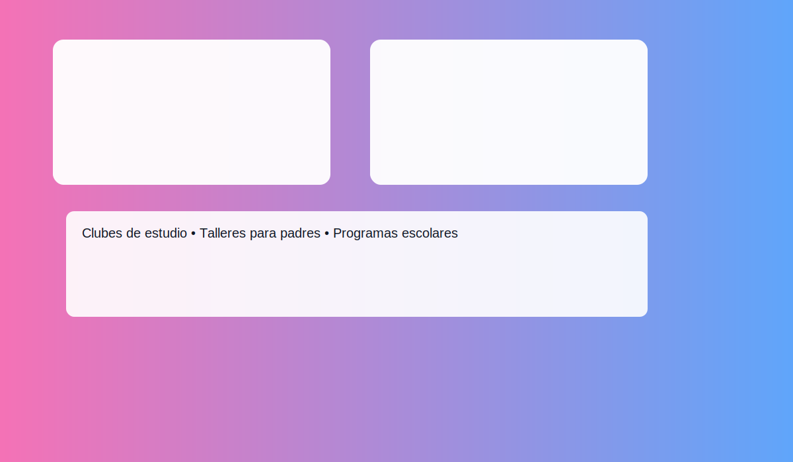
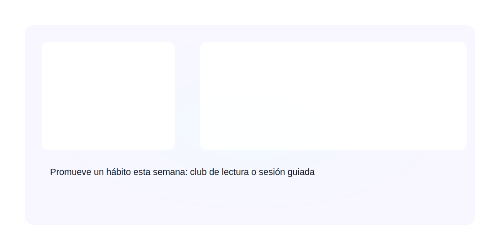

¿Qué es un hábito de estudio?
Un hábito de estudio es una rutina que facilita la organización del tiempo, la retención y la aplicación del conocimiento. Incorporarlos en programas hace el aprendizaje más eficiente y sostenible.
Componentes
- Planificación y objetivos claros.
- Técnicas de concentración y manejo del tiempo.
- Práctica deliberada y repaso espaciado.
- Ambiente y recursos adecuados.
Beneficios personales
- Mejor retención y comprensión.
- Menor estrés y procrastinación.
- Mayor confianza y autonomía en el aprendizaje.
¿Por qué son importantes en la comunidad?
Los hábitos de estudio fortalecen el capital humano y la cohesión social: más personas capacitadas implican decisiones mejor informadas y proyectos comunitarios más sólidos.
Educación y equidad
Promueven acceso a oportunidades educativas más igualitarias y reducen brechas de aprendizaje.
Economía local
Mejoran la empleabilidad y permiten que más personas aporten a la economía local.
Participación ciudadana
Personas bien formadas participan con más eficacia en procesos sociales y comunitarios.
Buenos hábitos de estudio se traducen en decisiones informadas, mejor resolución de problemas comunitarios y proyectos colectivos más exitosos.
Ejemplos prácticos
Espacios dirigidos por voluntarios donde jóvenes practican técnicas de estudio y reciben apoyo académico.
Capacitaciones que enseñan cómo acompañar los hábitos de estudio de los hijos en casa.
Escuelas que integran horarios de estudio, rutinas y seguimiento personalizado.
Formación docente centrada en métodos para enseñar hábitos y motivación al estudio.
Conclusión y reflexión
Incorporar hábitos de estudio en programas de formación no solo mejora el aprendizaje individual sino que fortalece el tejido social. Piensa en un hábito sencillo que puedas promover esta semana: ¿un club de lectura, sesiones de estudio guiado o talleres para padres?
Recursos
Enlaces, guías y plantillas para diseñar programas que desarrollen hábitos de estudio.
Guía práctica: Cómo estructurar hábitos de estudio (PDF) Plantilla de planificación de un club de estudio Videos: técnicas efectivas de estudioPlantilla de planificación
Usa esta estructura básica para planear acciones en tu comunidad:
- Nombre de la iniciativa
- Objetivo general y específicos
- Población objetivo y horarios
- Actividades semanales y duración
- Recursos y roles (voluntarios, materiales)
- Mecanismos de evaluación y seguimiento
Contacto
Si quieres que adapte este contenido a una presentación, PDF o a una web en WordPress/HTML, escríbeme y lo hago.